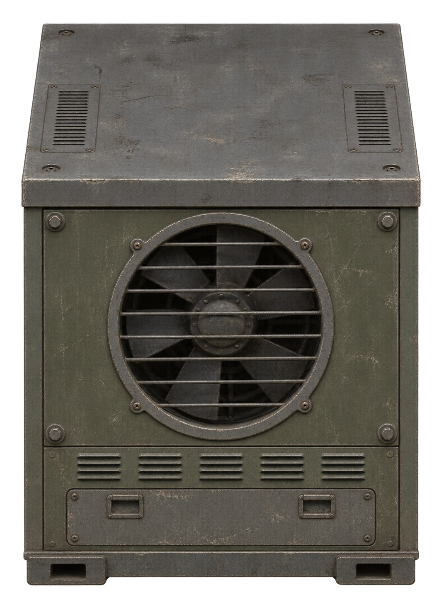
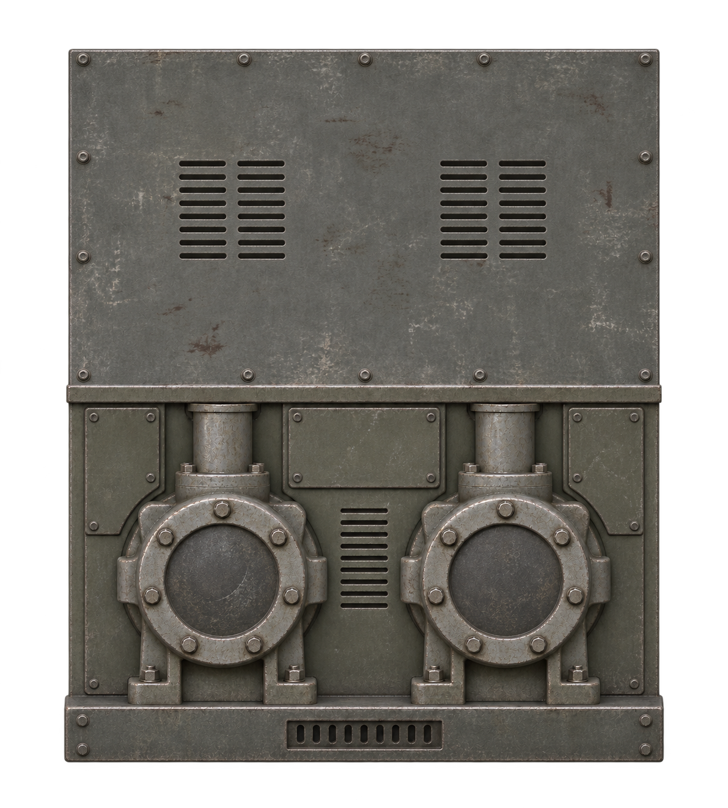
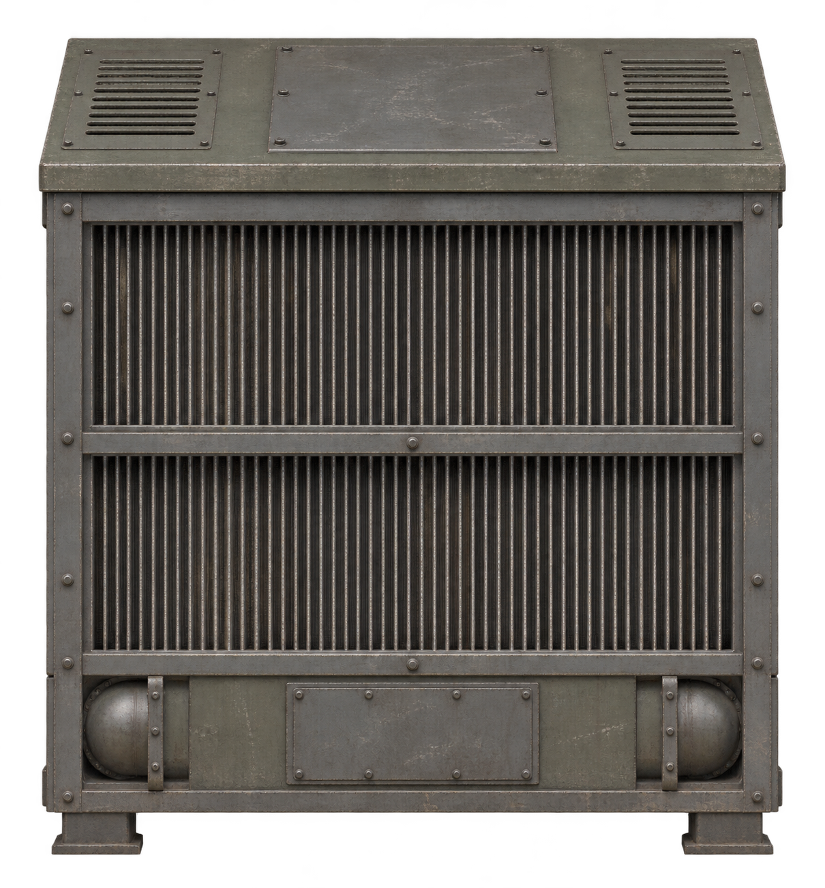
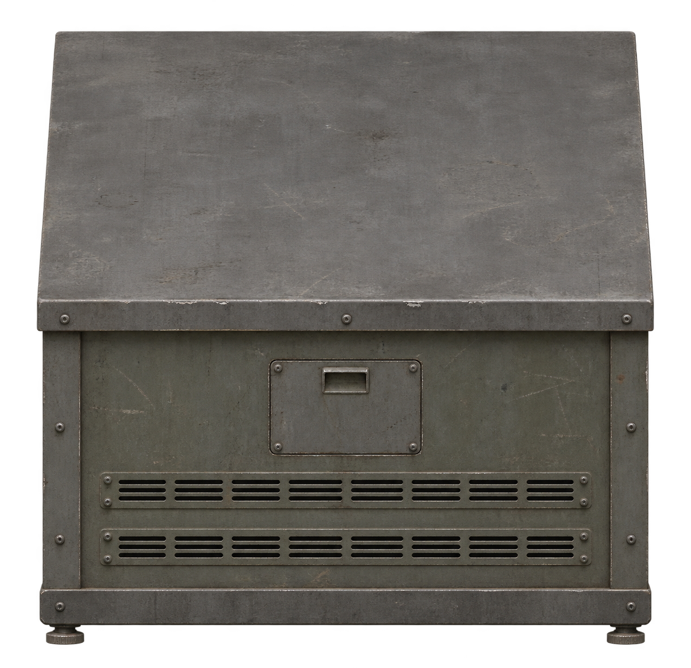

PNG NATIF · V121
Hadley — générateur de service
hadley-service-generator
v106-hadley / generator
- Fichier natif
- 1071 × 1469 px
- Boîte alpha ≥128
- [52, 57, 1015, 1412]
- Pivot
- [533.5, 1412]
- Poids
- 2 663 142 octets
ALIENS (1986) · PRÉSENTATION V121
Générateur, pompe, échangeur partagé et socle nu pour le panneau des vannes. Le catalogue compte 155 images distinctes.

PNG NATIF · V121
hadley-service-generator
v106-hadley / generator

PNG NATIF · V121
service-pump-unit
v107-service / pump-foundation

PNG NATIF · V121
conduit-heat-exchanger
v112-conduit / exchanger-west · v112-conduit / exchanger-east

PNG NATIF · V121
conduit-valve-plinth
v112-conduit / valve-plinth